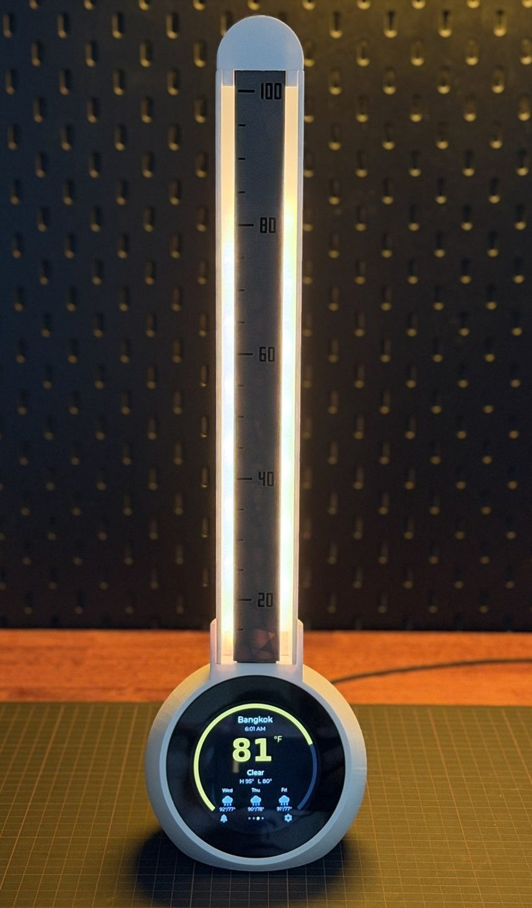

Firmware installer
Thermo
Lamp
Install or update your lamp's firmware straight from the browser. No Arduino IDE, libraries or drivers needed.
Firmware
Chrome, Edge, Opera or Firefox 151+ on Mac, Windows or Linux.

How to install
- Plug the lamp into your computer
Use a USB‑C cable into the port on the back of the lamp. It must be a data cable; many cables that come with chargers only carry power.
- Click Install ThermoLamp and pick the port
Choose the entry called
USB JTAG/serial debug unit(on a Mac it ends inusbmodem…; on Windows it's aCOMport). - Choose whether to erase
First install: tick Erase device if the board has run other firmware before, such as Waveshare's demo.
Updating: leave it unticked so your saved cities and settings are kept. - Wait for it to finish
It takes a minute or two. Keep the tab open and the cable plugged in until it says installation is complete.
- Set up on the touchscreen
The lamp restarts by itself (if the screen stays dark, unplug it and plug it back in). Then join your Wi‑Fi and pick your city right on the screen.
Troubleshooting
No port shows up in the list
- Try another USB‑C cable. A power‑only cable is the most common cause.
- Plug straight into the computer rather than through a hub or monitor.
- Still nothing? Hold the BOOT button on the board while plugging the cable in, then release it and click Install again.
"Failed to connect" or the install stops partway
- Close anything else using the port: Arduino IDE's Serial Monitor, another installer tab, or a serial terminal.
- Hold BOOT while plugging in (see above) and try again. An interrupted install is safe to retry.
The installer finished but the screen shows thin lines
Make sure you installed from this page. Firmware built yourself in Arduino IDE needs Waveshare's XIP libraries (see the build guide); without them the display shows lines whenever Wi‑Fi is busy.
Linux: permission denied on the port
Add yourself to the dialout group (sudo usermod -aG dialout $USER), log out and back in, then try again.